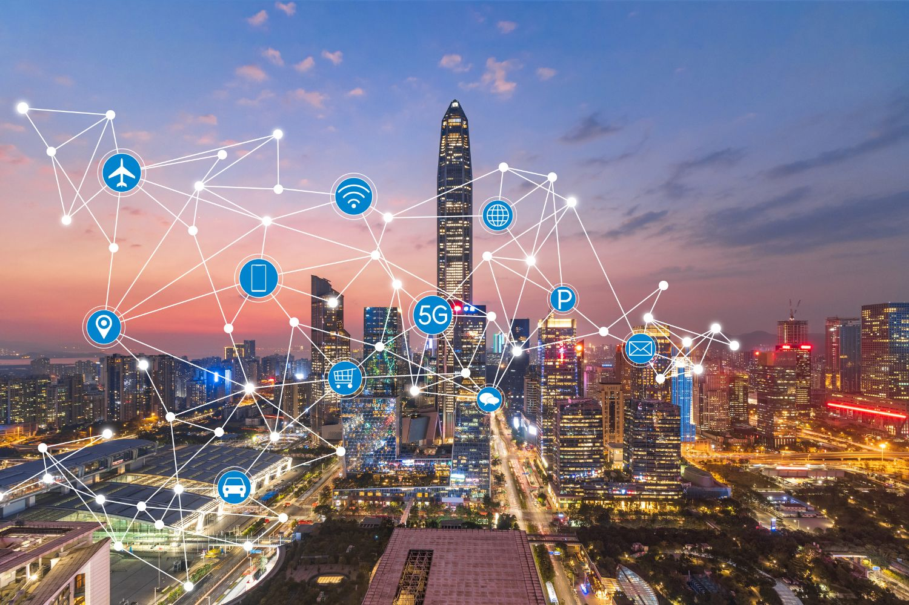

How technology is reshaping urban living for a sustainable future
As the global population continues to grow, cities are becoming the center of human activity. However, this rapid urbanization brings challenges such as traffic congestion, pollution, and overuse of resources. To address these issues, the concept of Smart Cities has emerged — cities that use digital technology, data, and innovation to enhance the quality of life for citizens and ensure sustainable development. https://youtu.be/bANfnYDTzxE?si=B99dRvvAJKCcVWkE
A smart city integrates information and communication technologies (ICT) with physical infrastructure and public services. The goal is to optimize city functions, promote economic growth, and improve the well-being of citizens. Smart cities rely on data collected through sensors, connected devices, and the Internet of Things (IoT). These systems monitor everything — from traffic flow and air quality to electricity and water usage — and help authorities make informed decisions in real-time.
Here are some of the essential components that make a city “smart”:
Several cities have already adopted smart technologies to enhance urban living:
Smart cities bring a wide range of benefits, both to citizens and to the environment:
Despite the benefits, smart cities also face significant challenges:
The future of smart cities looks promising as technologies like Artificial Intelligence (AI), 5G, and blockchain continue to evolve. Future cities will focus on sustainability, inclusiveness, and citizen well-being. With the introduction of digital twins — virtual replicas of cities — planners can test new ideas before implementing them in the real world.
The rise of smart cities marks a major turning point in human civilization. These cities are built not just on technology but on the goal of improving lives, protecting the planet, and ensuring that urban growth is both sustainable and equitable. As technology continues to advance, the cities of tomorrow will be cleaner, safer, and more connected than ever before.
[1] C. Caragliu, A. Del Bo, and P. Nijkamp, “Smart cities in Europe,” *J. Urban Technol.*, vol. 18, no. 2, pp. 65–82, Apr. 2011.
[2] British Standards Institution, “PAS 181: Smart city framework – Guide to establishing strategies for smart cities and communities,” 2014.
[3] United Nations, “World Urbanization Prospects: The 2018 Revision,” UN DESA, 2018.
[4] M. Giffinger et al., “Smart Cities: Ranking of European Medium-Sized Cities,” Vienna Univ. of Tech., 2007.